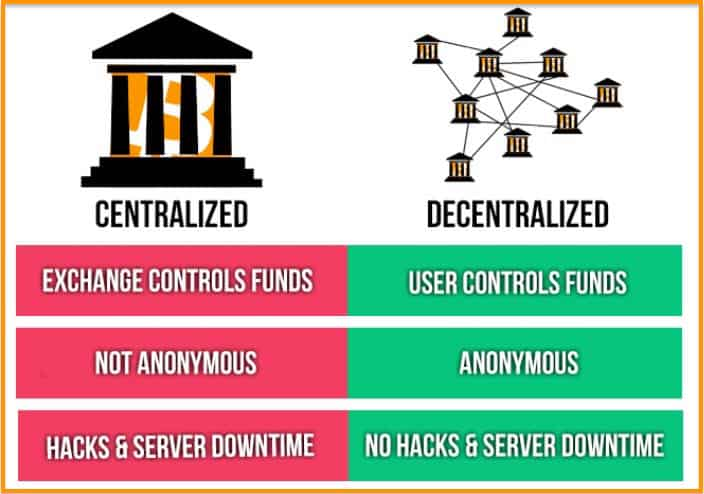

下一代的分享经济:共享经济
设想下什么样的平台才能满足如下的需求：
个性化生产
当我构思出一种高度安全汽车概念，于是我在平台建立一个新项目，说明这个项目由来，以及这个项目的关键点：
一个球形的汽车，车身主要由“弹性柔韧泡沫塑料车体”和“弹性柔韧轻型支架”组成，发动机和转轴部分被隔离在单独的空间，当有危险时候，载人部分球形空间可以与之完全脱离…
在设定项目启动条件以及分赃比例(3331)后，成功创建项目。 而后平台将该项目发送到生产“弹性柔韧”的高强度材料厂商，以及发动机、转轴的厂家,还有关注新汽车的人上。
几天后，生产“弹性柔韧”的高强度材料厂商开始进入项目。 同时研发各类发动机的厂商或个人也开始进入，有的愿意参与研发。感兴趣的人们也开始在项目上投资和挑选自己喜爱的：从形状大小，再到材料和发动机，并开始PK（阐述理由，尽力拉票）。
平台开始统计, 各类组合(如：发动机A+材料B)的个数，确定前n名（投资金额满足）作为实验机。 也有人对落选的样机情有独钟，他们开始自己增加投资金额，确保他们的样机也能参与试作。 最终有52个通过参与试作。 这个时候创意结束。
接着开始紧张的研发过程…,最终研发结束，试作原型出炉。
然后试作原型在经过汽车质量检测部门的严格测试后，又在不同路面，天气，交通情况下做了测试，最后又淘汰了12个，剩下40个。
然后进入预售阶段，平台上经营汽车内饰和外观的商家开始进入，人们通过平台对车的内饰和外观做了不同的选择，有的在这个阶段也参与到项目里来，有的进行来投资，有的承诺会进行售后维修…
个性化服务
今天是一个周末，我一起床就收到朋友从平台发来的组织去钓鱼的活动，我点击参与了这个活动，一个小时候，就会有专车服务将会将我准时送往活动地点。 接下来我接到了平台推送来的消息：家里的智能冰箱空了，平台问我是否需要配送一些食品，我选择后约了下午6点以后送来。
收拾完毕，在前往活动地点的路上，社区给我发来一条通知，说今天晚上社区停气，我想了想就干脆决定跟朋友晚上一起聚餐，不回家做饭了，我发起一条聚餐活动，并邀请朋友参加，接下来在平台上选择并预约了一个餐厅，并且在app上修改了送货到家的预约时间。
共享经济平台
下一代的共享经济平台，实质上是一个对等社会平台网络，它是打通各个垂直领域，进行生产资料共享合作共赢的一个平台，可以说是全球的分布式经济系统，打通各个环节而不是处处设置门槛，让自动化流转更加便捷，使得各类创新的智能服务呈出不穷。这实际上就是新形式下全新的互联网。
针对参与各方的开放，信任，权益的公平分配是下一代分享经济急需解决的主要问题。 那么如何能让各方都参与共建和共享利益呢？
在我看来，作为一个没有任何背景，任何机构担保的项目，要让人用，最首先要解决的就是：信任。
信任
只有当我们在对待某些事情上达成一致，形成共识，才能有建立信任的基础。而事实上我们是有些共识的基础的：
我们都相信:
- 人人都是平等
- 谁也不信谁 Do not trust anyone
这些共识的基础总结起来就是：
- 去信任化: 谁也不信谁
- 人人平等
- 共识共产共治共赢
第一共识:开源
为什么说共享经济的第一共识是开源（开放源代码）？简单来说：
- 开源才能保障人人共有共享
- 开源才可以保障对共识规则的审核落实（代码的执行逻辑就是共识规则）
- 开源也是IT软件行业彻底开放的象征。
具体来说，“开源”是分享经济的最佳载体，没有之一。 因为“开源”的本质就是在共享“技术”，而“技术”是生产资料的组成部分，这就是由市场驱动而“自发形成”的生产资料的“公有制”，开源才能够真正的让大家共同拥有一个平台。
2015年，谷歌开源了深度学习系统TensorFlow;随后facebook也将其最新的人工智能相关技术开源了…对诸多的高科技企业来说，“开源”活动已蔚然成风。 实际上，不仅仅是软件公司兴起开源运动，就硬件领域也兴起了Arduino这样的开源硬件。 开源已经是科技企业的一个潮流，想要成为某领域内的领头羊，以自己的技术为核心构建强大的生态系统是唯一的选择。 当年谷歌因为是手机操作系统的后来者，选择将android系统开源，如今该操作系统的市场份额将近90%，而作为智能手机操作系统的先行者微软(当年的多普达手机可是比苹果更早进入智能手机市场)，一直想复制他们在pc领域内的授权模式，到今天连1%的份额都难以守住,如今的微软也从拒绝开源，转变为拥抱开源，早在2014微软就将.Net给开源了。 就连在电子货币方面，也是开源独领风骚，比特币(Bitcoin)大家耳熟能详，在开源模式运作下的又一杰作(哪怕它只是一个实验，种种的不完善，居然也得到如此多的人支持)，目前的各种开源区块链(Blockchain)技术都是基于此。
- 开源解决各方（包括最终用户）的最初信任的问题
还记得去年因为信息泄露而导致山东女孩徐玉玉死亡的事情么，现在，盗窃信息已经不算什么，在更新的《支付宝隐私权政策》中已经明目张胆在收集并传递信息：“要向支付宝关联公司和合作伙伴收集其合法留存的您的行为信息、交易信息…”,而你无权禁止他们收集你的信息，你只可以发短信退订广告，对用户的信息滥用以至于此。
- 开源才能保证这是残各方自己拥有的自建平台
但是开源的只是万里长征的第一步，如果运作不开源，那么还是无法确保各方利益的真实执行。这需要一个各方满意并且各方看得见的运作机制。 这种机制必须允许保证各个参与者在平台上贡献的资源进行论功行赏，从而最终达到自洽和自我进化。
第二共识: 去中心化(去信任化,P2P)

以前信息是放在中心平台,平台负责管理,你完全不清楚平台是如何存储和管理您的数据，平台方以及平台维护者完全可以绕过您而任意滥用您的数据。而去中心化，首先是指信息的去中心化，数据在自己的手里，任何使用都经过自己的允许，其次才是指平台的去中心化。
TO BE CONTINUE.